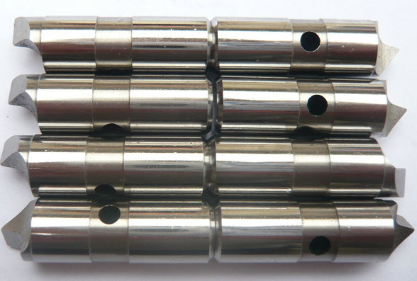
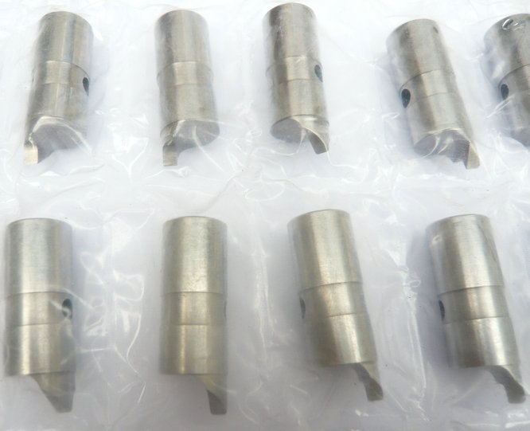

Kraftbetätigte Mitnehmerbolzen für Stirnseitenmitnehmer – Ihr Partner für moderne Antriebslösungen!


Klassische Mitnehmerbolzen übertragen das Drehmoment rein formschlüssig über die stirnseitigen Mitnehmer. Bei unseren kraftbetätigten Mitnehmerbolzen für Stirnseitenmitnehmer wird zusätzlich eine definierte Axialkraft – hydraulisch oder pneumatisch – auf die Bolzen gegeben.
Testen Sie unsere Leistungsfähigkeit. Senden Sie uns Ihre Zeichnung oder ein vorhandenes Bauteil – wir fertigen einen Satz kraftbetätigter Mitnehmerbolzen für Ihren Stirnseitenmitnehmer. Gemeinsam stellen wir sicher, dass Ihr Spannsystem auch unter Höchstlast zuverlässig arbeitet.


Das bringt entscheidende Vorteile: Aktive Zustellung – Die Bolzen fahren selbsttätig aus und legen sich gegen das Werkstück an. Konstante Spannkraft – Unabhängig von Drehzahl oder Verschleiß bleibt die Andrückkraft konstant. Prozesssicherheit – Auch bei Unterbrechungen oder wechselnden Rohteildurchmessern wird die Kraft überwacht und geregelt. Höhere Drehmomentübertragung – Durch die kraftschlüssige Unterstützung können schwerere Zerspanungsaufgaben realisiert werden.
Stirnseitenmitnehmer haben sich als effiziente Spannlösungen für die Wellenbearbeitung etabliert. Eine entscheidende Weiterentwicklung sind kraftbetätigte Mitnehmerbolzen, die im Vergleich zu passiven Systemen eine aktive, steuerbare Kraftübertragung ermöglichen. Wir sind ein chinesischer Hersteller dieser hochwertigen Antriebselemente und beliefern weltweit führende OEMs sowie Anwender aus der Dreh- und Schleiftechnik.
- home
- products
- contact
- equipments
- offset driving parts
- half offset drive pins
- central driver parts
- standard/ Fixed driving pins
- Lowered drive parts
- clockwise driver pins
- counterclockwise driving parts
- full width drive pins
- Lasting driver parts
- chisel-edged driving pins
- floating drive parts
- power-operated driver pins
- hydraulic driving parts
- mechanical drive pins
- movable driver parts
- fixed driving pins
- carbide driver pins
- tool steel S7 driving parts
- changeable pins
- face drive pins